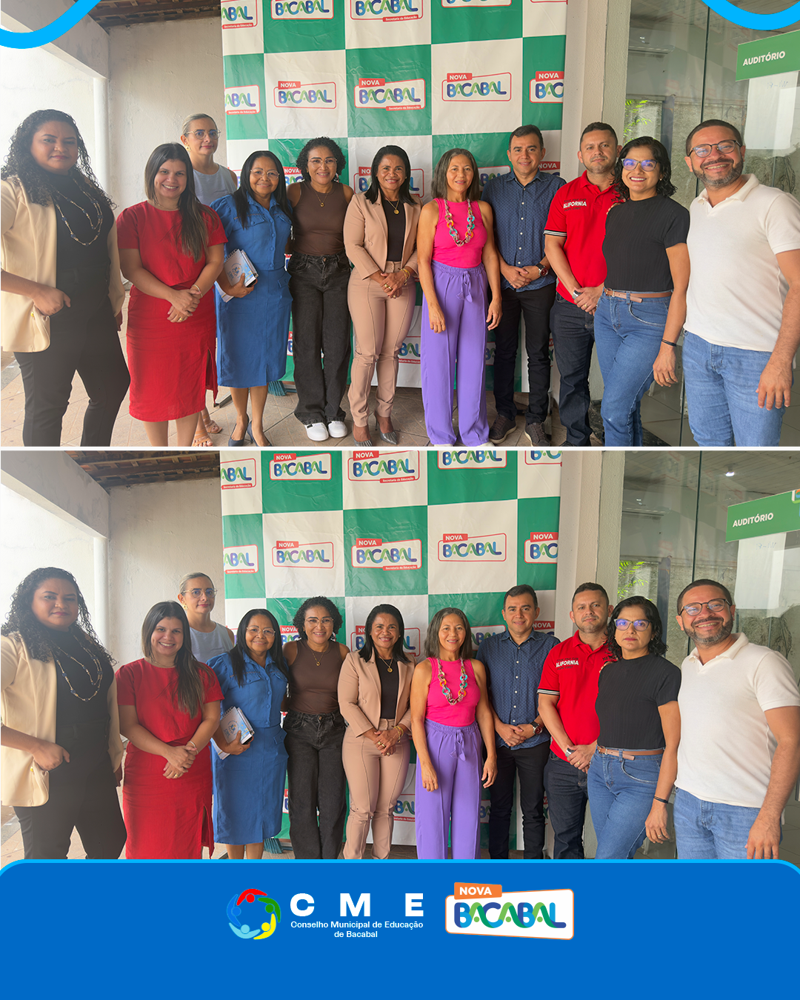

Data: 28 de janeiro de 2026
Horário: 8:00 - 18:00
Descrição
O Conselho Municipal de Educação esteve reunido na SEMED
Reunião para tratar de diversas pautas sobre a educação do município
O Conselho Municipal de Educação esteve reunido na SEMED, com pautas diversas, com destaque para o Calendário Escolar e os temas da Gestão Democrática e do Seletivo para Gestores, fortalecendo o planejamento e a organização das políticas públicas do município.
